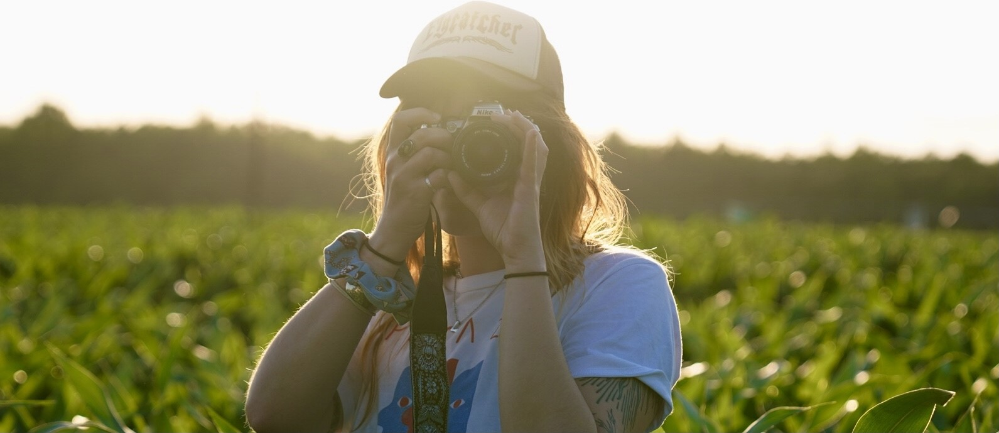

MORE: FRIENDS & INFLUENCES
| Who | Where | Why |
|---|---|---|
| Kait Champagne | champagne.kaitlyn.myportfolio.com | personal friend, deeply suportive, has an AA degree in photo. rock climbs religiously, may have a future in tattooing. |
| Tim Heuser | timheuser.com | tim runs the photo lab at Unique Photo in Fairfield, NJ, where i get most of my work developed. he primarily shoots black and white. |
| Gerard Exupery | gerardexupery.com | gerard asked me to provide edits for his photo book Women Hold Up Half the Sky. his respect for my opinion was uplifting, and he gave me a beautiful vintage Nikkormat in exchange for my work. |
| Fred McDarrah | muuscollection.com/fred-w-mcdarrah | fred was the staff photographer and photo editor at the village voice paper for the majority of the time it ran. i became intimately familiar with his work when i worked for the archive that owned all his collected photos, ephemera, books, etc. |
| Rosalind Fox Solomon | rosalindfoxsolomon.com | another photographer whose collection i worked with. started at age 40 and still kick in her 90s today. incredible developing, never ever crops in from her original shot. |
| Godteeth | godteeth.com | an html site i stumbled upon one day in a fit of web 1.0 nostalgia. i love how he uses a website as a platform for thoughts, interests, and self expression. i would love for this site to become something more in line with his vision of "website as commonplace book". |
If you'd like to see more of my work, you can find some on Instagram. Click through here:
